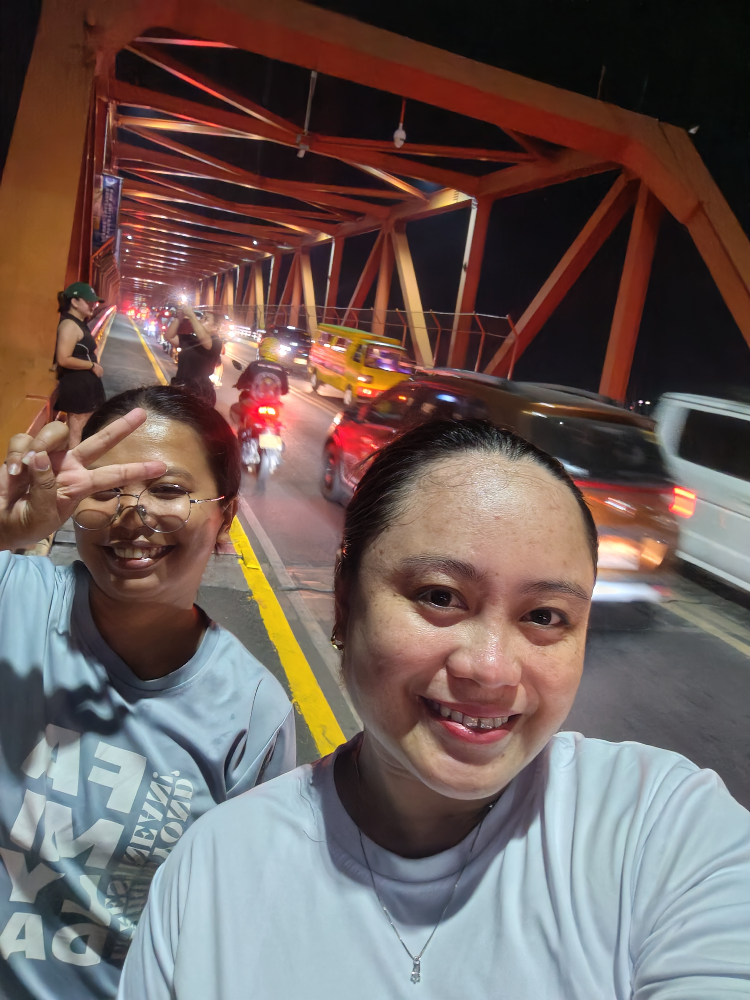
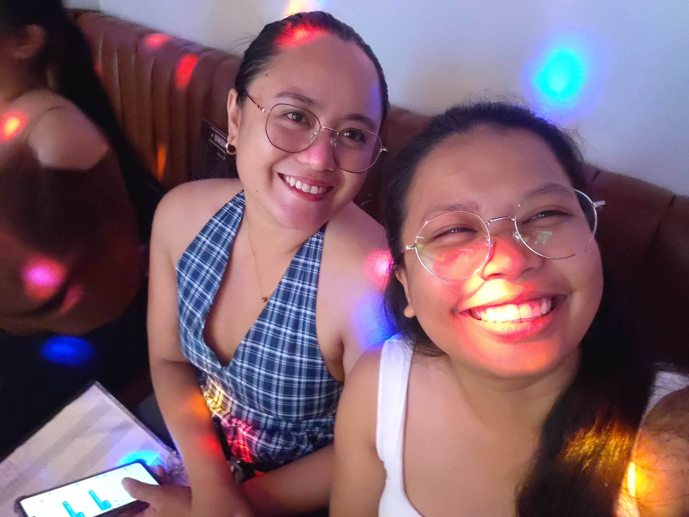
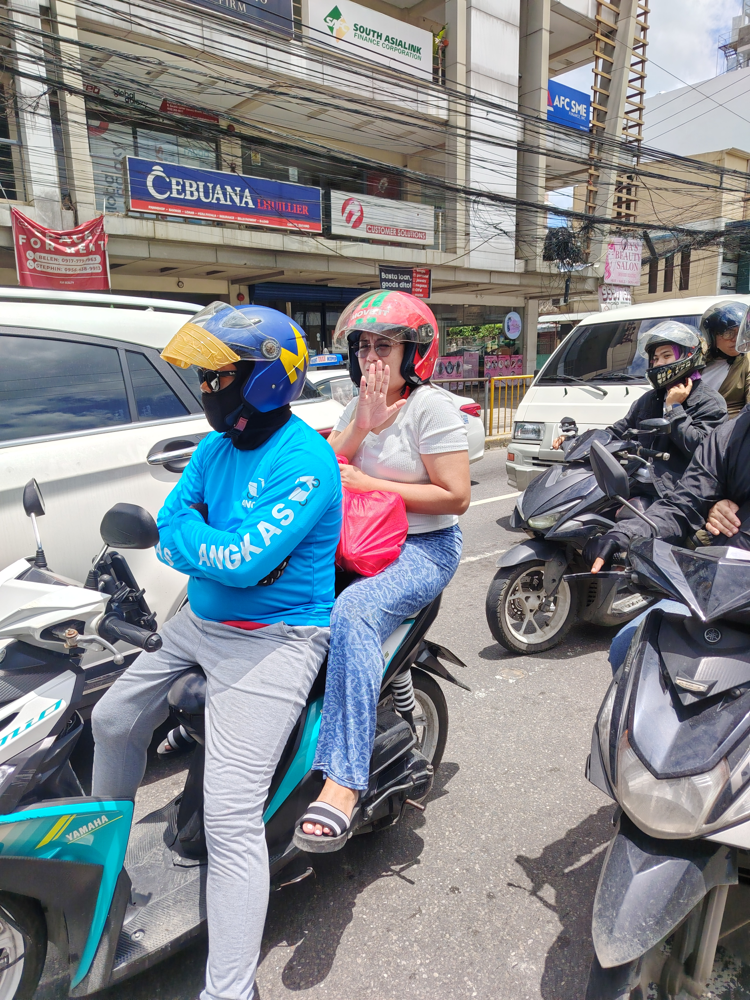
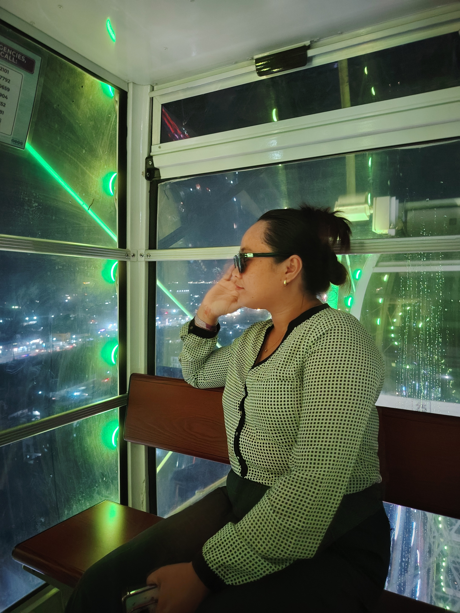
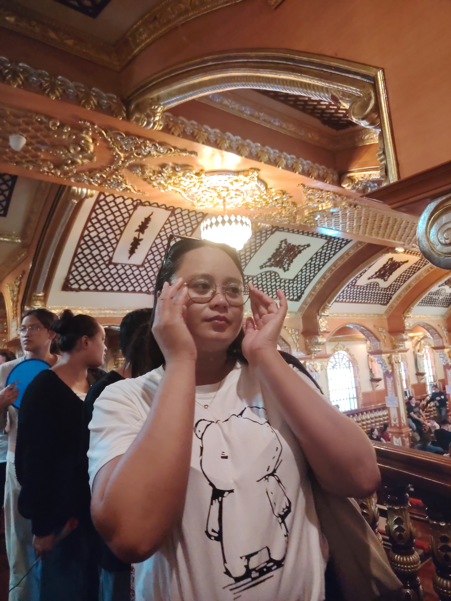
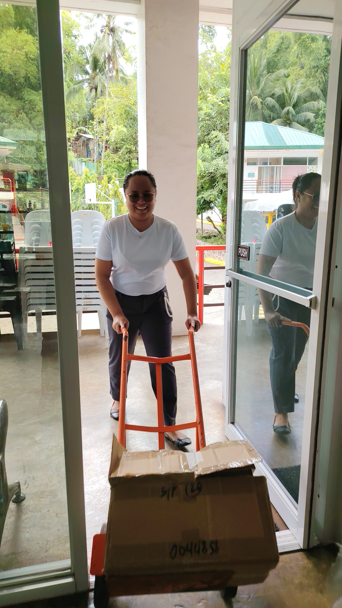

Your Journey Map
Click a level to begin. Answer correctly to reveal each memory.
🌱 Every path begins with one little step.
LEVEL 1 OF 7
Level 1
The Beginning
Every journey starts somewhere. Answer this question to reveal the first memory.
Which word best describes a great beginning?

Hi, Nikki ghurl! 💗
We first met at school as colleagues, and you were someone nga grabe ka naning sa tanan nimong buhaton. Day 1 pa lang sa work, nagtuon na dayon ka sa books😭. Even when we told you, “iz gwenchana,” you’d still study on your own. HAHAHA. But I’m thankful nga at some point, nagmeet atong minds and attitudes because you’ve become one of the amazing friendships I’ve found, cultivated, and nurtured. 🥹💗
This picture reminds me of how you’re such a BDO friend. You really find ways to make things happen jud. Bisan gihubak na, nidagan jud ka og 26 kilometers back and forth para lang… HAHAHAHAHAHAHA. GIRL, THE DEDICATION. 😭😂
LEVEL 2 OF 7
A Little Discovery
Keep going. One answer brings you closer to the next reveal.
What helps us discover something new?

Eyyyy, us in our mini-rebellion era huhuhuhuhahahaha! Na para bang mga milyonarya makaasta tawn uy. 😭😂 I really enjoyed our samgyupsal dates and all the outfit ganaps natin. I appreciate how you dress me up and style me, from choosing the clothes to doing my makeup, kahit pareho ra ta walay alamag. HAHAHAHAHA. 😭💗
Know that I’ll always be here for all your dramas, laags, and kantas. May you always find the courage to listen to your own voice, especially on the days when you doubt yourself. I hope it reaches the deepest parts of you and reminds you that you are enough and that you are doing enough. You don’t always have to do more to prove your worth. Sometimes, you just have to pause, breathe, and give yourself the same grace you so freely give to others.
LEVEL 3 OF 7
The Challenge
Not every step is easy, but every challenge can teach us something.
When something feels difficult, what is a helpful response?

You may not always be my go-to person sa laag kay lisod man ka hagiton, especially if layo HAHAHAHAHA, but I appreciate every time mukuyog ka, and ikaw pa jud usahay ang muuna og hagad. 😭😂 Because of you, nahimo na sad kong Move It person. HAHAHAHAHA.
Thank you for bringing me to places I’ve never been to, for guiding me through places I don’t know, and for all the experiences I get to have because of our laags. I love how these little adventures allow me to discover new places and experience things I probably wouldn’t have tried on my own. Here’s to more spontaneous laag plans, new places to explore, and memories to look back on. 💗
LEVEL 4 OF 7
The People Along the Way
Some moments become special because of the people who share them with us.
What helps a team or friendship grow stronger?

Anjo World girlies! Sino ka diyan nga kita naman ang mamirma sa mga MOA ron? HAHAHAHAHAHAHA. 😭✍️
Continue to face your fears coz every step you take brings you closer to better and bigger opportunities. The heights may seem scary at first, but sometimes, they’re only frightening because we haven’t experienced them yet. So take the leap, even when your knees are shaking. You don’t have to have everything figured out before you begin. And if you ever fall, know that I’ll always be here, arms extended, ready to help you get back up. I’ll be your #1 supporter through and through, cheering you on in every little and big victory. Always remember that you’re capable of more than you think. Padayon, Nikkiiiii! 💗🥹
LEVEL 5 OF 7
A Moment to Remember
Pause for a moment and unlock another snapshot along the way.
What is one good way to preserve a meaningful moment?

Hands down to your faith, Nikki💗. I admire how you continue to hold on to God, even when things don’t always make sense or when the answers you seek take time to come. May you never lose that faith, that quiet assurance that He is working even in the moments when you cannot see it. Continue to trust His timing, even when it differs from yours, and remember that delays do not mean denials. I hope you always find comfort in knowing that you don’t have to carry everything on your own. May God continue to guide your steps, give you peace in moments of uncertainty, and remind you of His goodness in every season of your life. And when your faith feels a little shaky, I hope you remember how far He has brought you. Keep knowing, loving, and serving Him in your own beautiful way. I’m always rooting for you, and praying that you continue to grow not only in the things you do but also in the person God is shaping you to become.
LEVEL 6 OF 7
Almost There
You have made it through six steps. One last answer before the finale.
What makes a journey worth celebrating?

You were tested, and you prevailed. 🥹🤍 And knowing you, I know it wasn’t always easy. I’ve seen how much you strive, how deeply you care, and how you keep showing up even when things get difficult. I hope you never forget how far you’ve come and how much you’ve overcome. Keep holding on to your faith, Nikki. Trust that God knows the desires of your heart and is guiding you even when the path ahead seems uncertain. And whenever you start doubting yourself, remember that you don’t have to face everything alone. I’ll always be here to remind you of what you’re capable of and cheer you on, every step of the way. Always proud of you! 💗
THE FINAL LEVEL
Are You Ready?
Hi, birthday girl! HAHAHAHAHAHA! My apologies for greeting you late kay nabusy ang ferson sa laag nato nya namatay pag-uli. HAHAHAHA natug na lang. Nya ni-absent man daghan by Monday, so wa na naapas. Naunahan na nuon ko ni Kristian. HAHAHAHAHAHAHA 😭
Know that I am one of the happiest people for the good news you’ve received. I’m genuinely happy for you, but at the same time, medyo sad sad pud kay wala na tay mga “Miss, naa na ka sa school? Nakabook na ka?” and “Miss, kaon na ta” moments. HAHAHAHA. I’ll definitely miss those little routines, but I know our friendship isn’t so shallow nga di na ta mag-istorya just because we’ll be in different institutions. Duhhh, ka-duol ra baya sa inyoha! I-invite sab ko if naay kaon, ha? Especially if wala kay kuyog. HAHAHAHAHAHA. 😭💗
I hope you find the strength and courage to face every challenge and new endeavor that comes your way. I know there will be days when things feel overwhelming, but I hope you never forget how capable you are and how much you’ve already overcome. Keep trusting yourself, your timing, and God’s plans for you. I may not be there to witness your everyday wins anymore, but please know that I’ll always be rooting for you wholeheartedly. Different institutions, same friendship. Always proud of you, birthday girl! 🥹💗
P.S. Know that confidence looks good on you! 😊